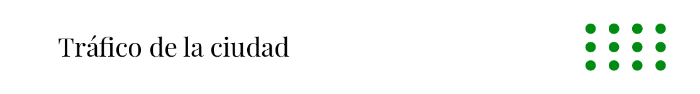
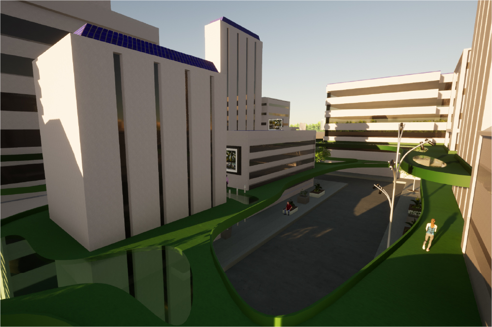
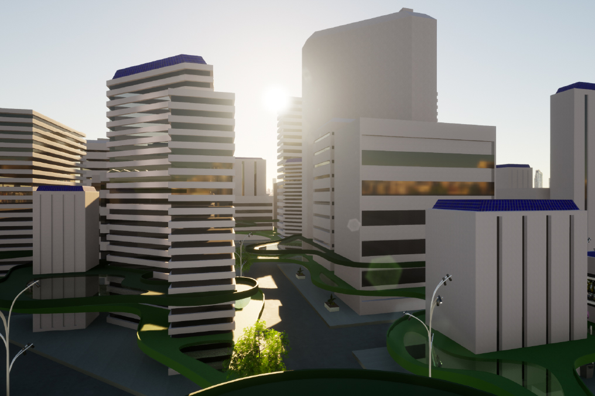
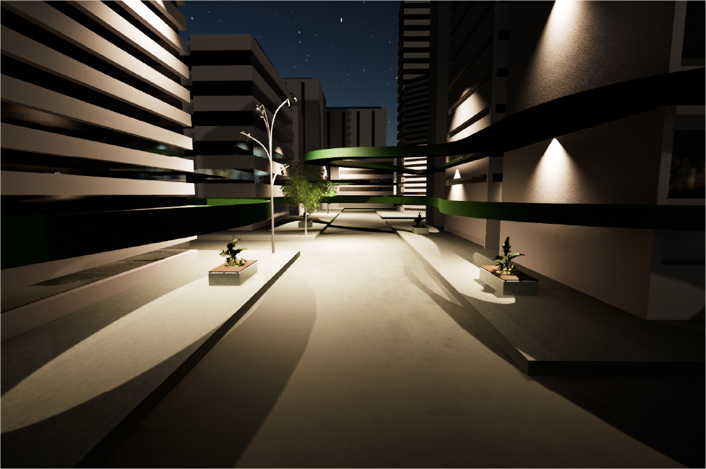
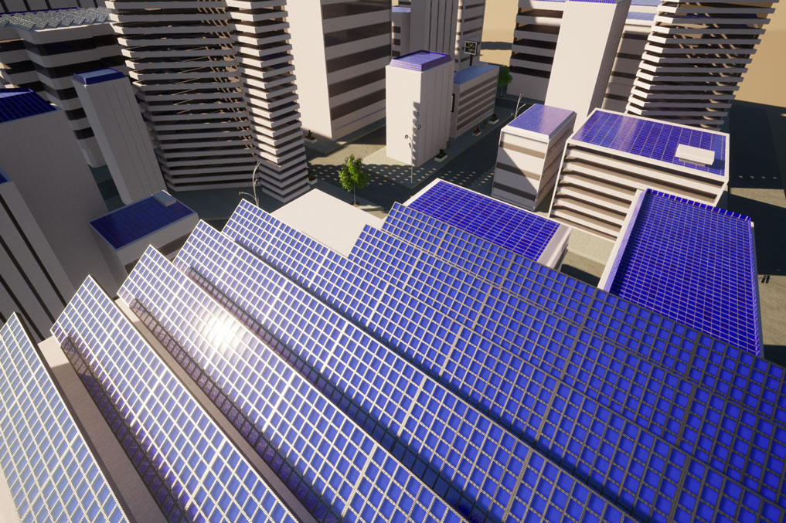
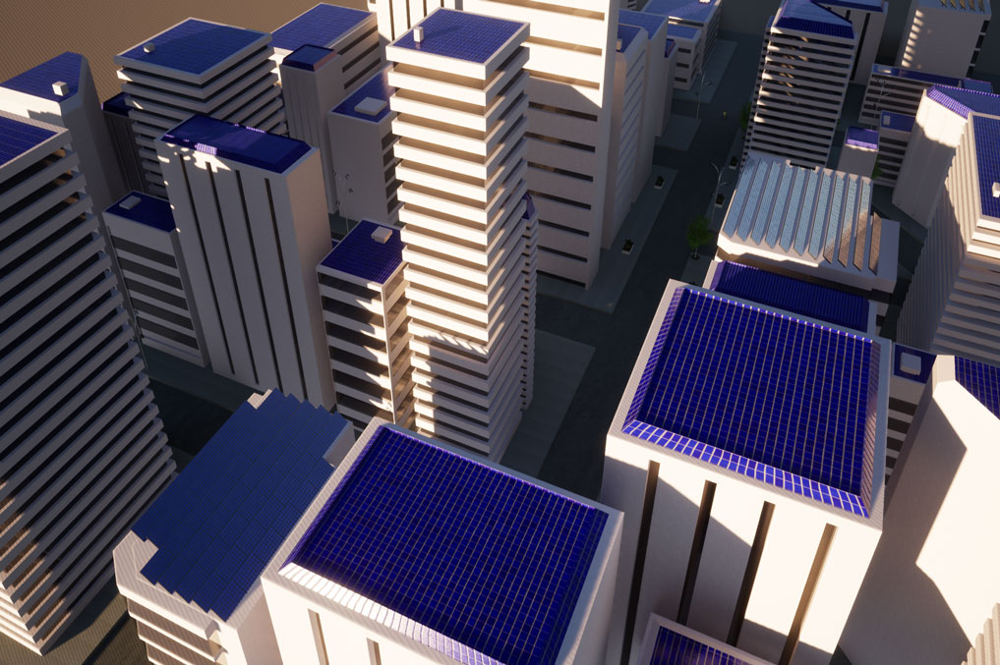
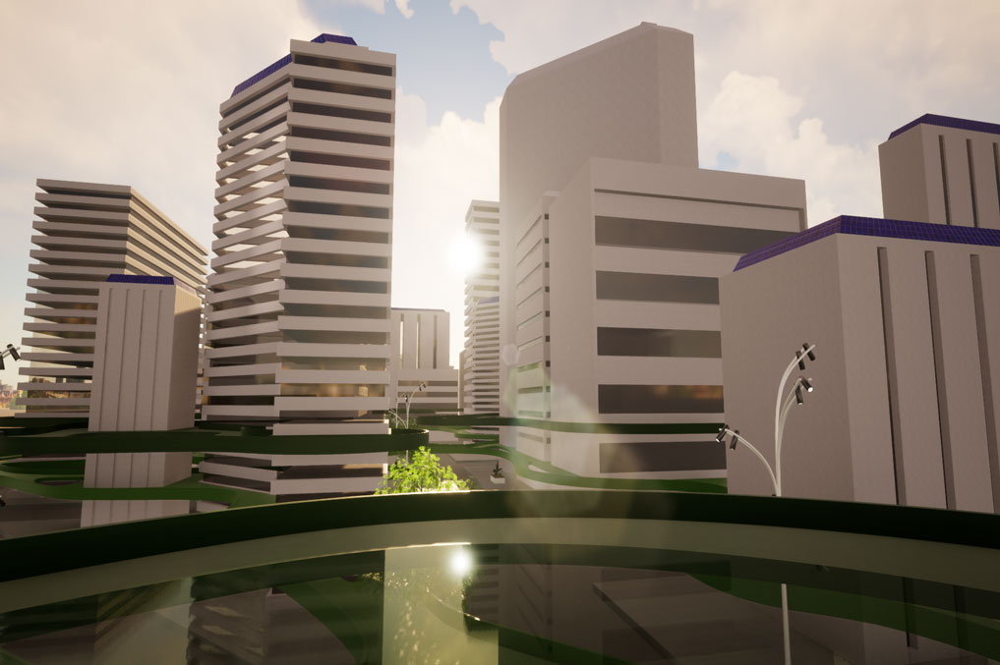

Esta parte del proyecto es un proceso determinado más que nada para la funcionalidad de la ciudad teniendo como base a los habitantes, los cuales podrán hacer uso de estas estructuras a la hora de transportarse a los diversos lugares que compone una ciudad. Transformando así la calle existente por una que sea amigable tanto ambientalmente, como creada para las personas y no para objetos inertes.

Funcionamiento
Los espacios se elevan de manera orgánica para que no choque con las estructuras que ya existen en la ciudad, además, si bien el color verde es un elemento referente en las imágenes, estas reflejan el color que sería adecuado para lo que será la ciudad en ese momento de desarrollo, pues se estima que como las calles se volverán netamente para el transporte de las personas, la flora debiese tomar el mismo rumbo, pudiendo complementar el ambiente con ello. De esta manera, la estructura se desarrollará en los alrededores de los edificios con una altura de 3 metros desde el suelo que se encuentre, proporcionando un camino entre las distintas conexiones de calle y generando también un “tercer piso” por la alta concurrencia que debiese exister al desplazarse a pie o en transportes no motorizados como bicicletas, patines, skates, entre otros.

La materialidad de la estructura será principalmente de concreto con color, pues es un material estable para lo que se desea realizar, y además, se tendrá diferentes entradas de luz, pues el espacio posee partes de vidrio, el cual es adecuado para poder realizar la segunda parte de este proceso: poder iluminar las penumbras. El vidrio es uno de los mejores aliados que pueden proporcionar un espacio seguro, agradable a la vista y que ayude al sistema de luz en las calles, pues si se hiciera el proyecto completo de concreto, quedarían muchas esquinas con sombras a plena día.

Este punto es solucionado también gracias a la integración de los paneles solares en su implementación a la ciudad, los cuales se encontrarán en la mayoría de los techos de los edificios o casas de la ciudad, otorgando no solo una fuente de luz sustentable para la noche, si no también, funcionará como complemento a la carga de los otros proyectos existentes, tales como los teleféricos y al sistema de drones. Existirán dos tipos de paneles según su funcionamiento (que dependerá si se desea brindar luz al sector o energía de recarga), los que se encuentran insertos al techo como parte de su estructura o los que funcionan por separado como panel. Estos últimos, debido a la latitud que se encuentra Chile, variarán en su inclinación, sin embargo, todos se acercarán a una inclinación de 33 grados.



En el siguiente recuadro podrá observar con detalle la estructura que conforma este paso del proyecto.